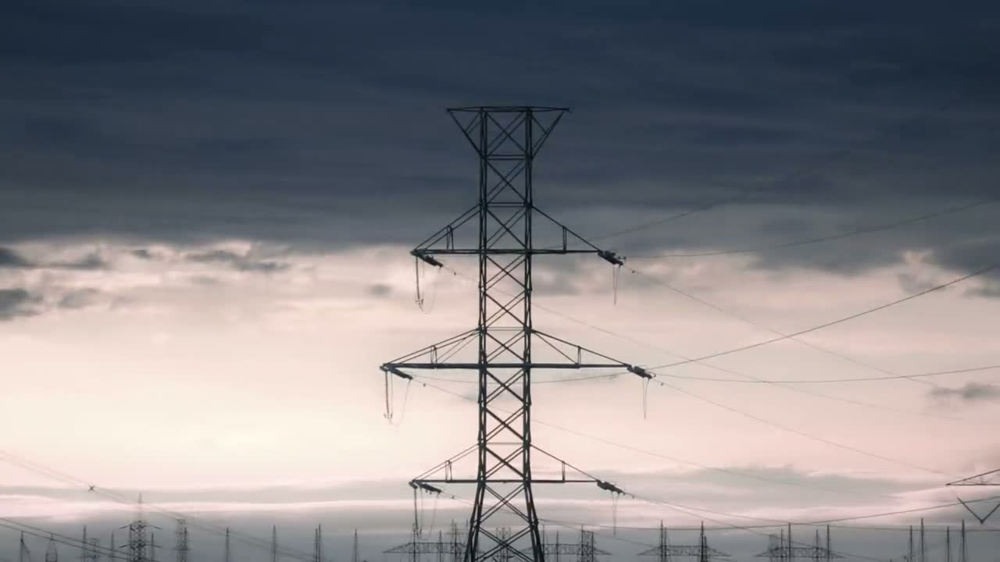

Field Ledger
An Open Source Agriculture Data Dashboard the Operator Fully Owns
PDF · object model · DOI 10.5281/zenodo.23186671CodeNinja Atoms
CodeNinja Atoms is building a sovereign AI operating system for the physical world.
Sovereign system designs for ports, grids, mills, plants and sites: what to sense, where each model runs, what the object model holds, what it costs and who approves every action.
Designed on Praxis. Made living with Hyper Ontology. Open papers, open object models, open data.
Praxis
Praxis turns an operator's requirement into a complete design for physical AI, reasoned through eight lenses from first principles to hardware, with every claim on a record and a person on every write.
Hyper Ontology
Every design ships its object model as a package. Hyper Ontology imports it and stands it up over the operator's own systems of record: objects, typed links and actions that sense, decide, act and learn.
Research · Vertical-Driven Architectures
Each paper is a complete reference architecture for one real operation, written so an engineer, or their coding agent, can build it. Operators are described by class, never by name.
Questions answered by sector: agriculture and earth observation · energy and utilities · heavy industry and construction · maritime and ports · oil and gas
An Open Source Agriculture Data Dashboard the Operator Fully Owns
PDF · object model · DOI 10.5281/zenodo.23186671Earth Observation That Turns Restricted-Crop Detections Into Enforceable Case Files
PDF · object model · DOI 10.5281/zenodo.23186675One Flight of 4 Band Orthoimagery and LiDAR for Vegetation Mapping
PDF · object model · DOI 10.5281/zenodo.23186673One system of context for OT Security and NERC CIP Evidence
PDF · object model · DOI 10.5281/zenodo.23157957A Plant Reliability Assessment Study the Operator Can Audit
PDF · object model · DOI 10.5281/zenodo.23157965Ending Distorted Radar Level Readings and Tank-to-Tank Swapping Across the Tank Farm
PDF · object model · DOI 10.5281/zenodo.23157967Read-Only Smart Fire Protection Monitoring for Every High-Risk Factory
PDF · object model · DOI 10.5281/zenodo.23126565One Governed Digital Twin for Every Asset, Feed and Dollar
PDF · object model · DOI 10.5281/zenodo.23126431Independently Counted Production for Every Steel Mill in Pakistan
PDF · object model · DOI 10.5281/zenodo.23126563Live Production, Crane and Delivery Evidence for Every Pour on a Construction Site
PDF · object model · DOI 10.5281/zenodo.23126448A Reference Architecture for Predictive Health, Safety and Environment Intelligence in Pakistan's Oil and Gas Operations
PDF · object model · DOI 10.5281/zenodo.23119714Predicted Truck Turn Time and Live Yard Sight for a Container Terminal
PDF · object model · DOI 10.5281/zenodo.23159331Live Ignition and Outage Risk for Every Distribution Feeder
PDF · object model · DOI 10.5281/zenodo.23159328Methods
the hyper-ontology/1 Package and Hyper Ontology
PDF · DOI 10.5281/zenodo.23132104Method and Evidence from Seven Reference Architectures
PDF · DOI 10.5281/zenodo.23132102
Solutions
Operators publish what they need. We publish how to build it: the full solution design for a published requirement, from sensing to the living ontology.
Questions
CodeNinja Atoms is building a sovereign AI operating system for the physical world. It publishes open reference architectures for physical AI in operations such as energy grids, ports, oil and gas, manufacturing and agriculture, designed on Praxis and made living with Hyper Ontology. CodeNinja Atoms is a fully owned subsidiary of CodeNinja.
A complete system design for one real operation: what to sense, which models run where and on which hardware, the object model (ontology) that joins the operator's existing systems, what it costs over three years, and which named person approves every action.
The system runs on hardware the operator owns, inside its own country, on open-weight models whose licences let the operator keep and change them, so no operational data has to leave and no single outside AI company sits in the serving path.
Praxis is CodeNinja's platform for designing physical AI systems. It turns an operator's requirement into a complete design, reasoned through eight lenses from first principles to hardware. Every design on this site was made on Praxis. It is in beta: sign up at https://app.codeatoms.ai/signup, and during the beta every account is approved by hand, usually within a day.
Hyper Ontology is CodeNinja's ontology platform. It imports the object model a Praxis design publishes (format hyper-ontology/1) and stands it up as a living system over the operator's own systems of record. It is in beta.
Yes. Every paper, object model, model register and dataset row is published under CC BY 4.0 with a DOI. The full set loads as one dataset on Hugging Face, and an MCP server gives coding agents every design.
For agents and engineers
Load every design, object, model choice and cost line as one dataset, or read the site the way an agent does.
codeninja-research-mcpPraxis beta
Every design here was made on Praxis, and Praxis is now open to outside engineers in beta.
Request access. During the beta every account is approved by hand, usually within a day.
Having trouble? Email us.